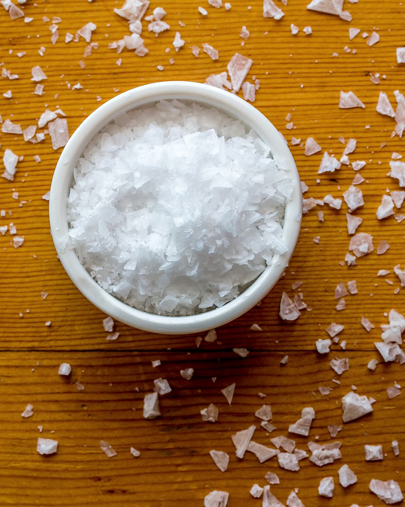
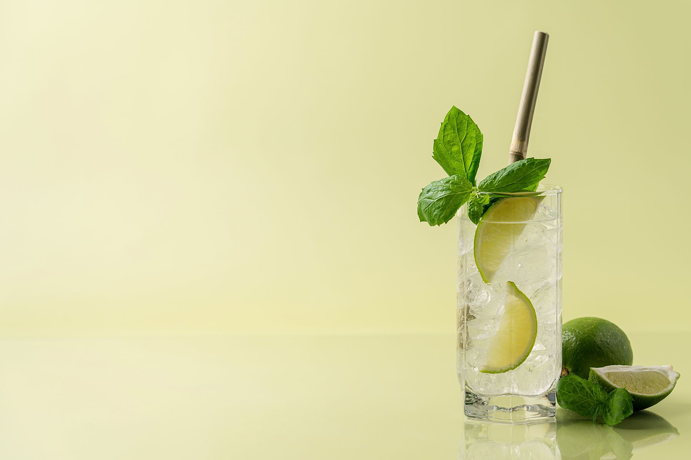
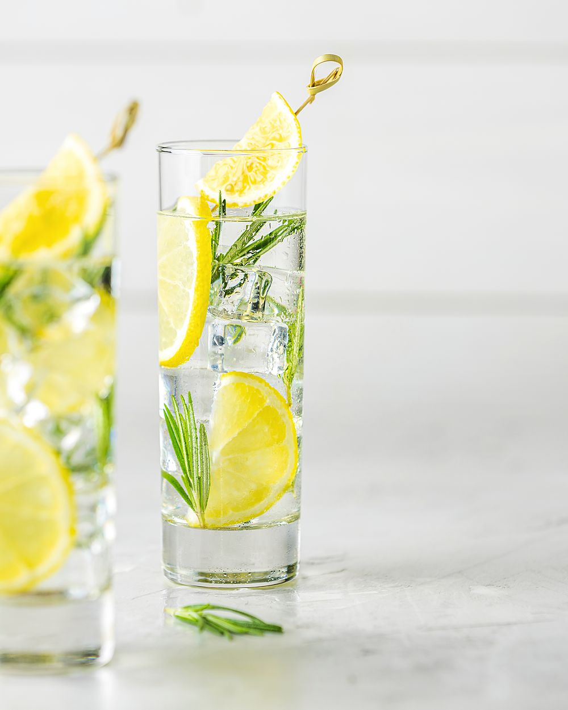

Half a pinch of salt.
A third of the sugar.
Kiam is Hokkien for salty and Singlish for stingy. Both are true: five sodas made from fresh fruit and sea salt, with about a third of the sugar of an ordinary soda. Bottled in Tai Seng, sold on Saturdays and in eight shops.

Salt makes fruit taste like itself.
Every drinks stall in Singapore knows this already: a sour plum in the lime juice, plum powder on the guava, a shake of salt on the pineapple. Salt turns bitterness down and turns the fruit up, and once it does, you stop needing so much sugar to get there.
So we put half a pinch of sea salt in every bottle and took the sugar down to 7–9 g. An ordinary cola, poured to the same 250 ml, has 26.5 g. You taste the calamansi, not the syrup.
| Fruit | 20–30% juice, pressed here |
|---|---|
| Sea salt | 150 mg |
| Sugar | 7–9 gan ordinary cola: 26.5 g |
| Energy | about 35 kcal |
| Anything else | carbonated water. That’s it. |

Cold. That’s the whole instruction.
- From the bottle, straight from the fridge, as cold as it will go.
- Over ice with a squeeze of lime, if it’s the calamansi.
- Half and half with soda water if you find it too salty. Some people do.
- With food. It was worked out at a table, not at a desk.
Saturdays at the door. Otherwise, eight shops.
The Tai Seng unit rolls up its door every Saturday, 9 am to 1 pm. A bottle is S$5, six are S$27, any mix, and you can taste before you decide. The rest of the week, these shops keep it cold:
- Lengkok Coffee Tiong Bahruall five
- Ninefold Grocer Katongall five, and six-packs
- Sunbird Records & Coffee Jalan Besarall five
- Third Uncle Minimart Serangoon Gardenscalamansi, roselle
